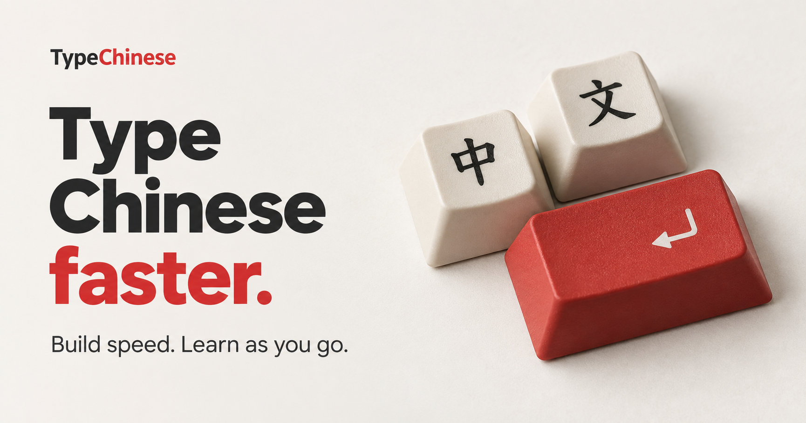
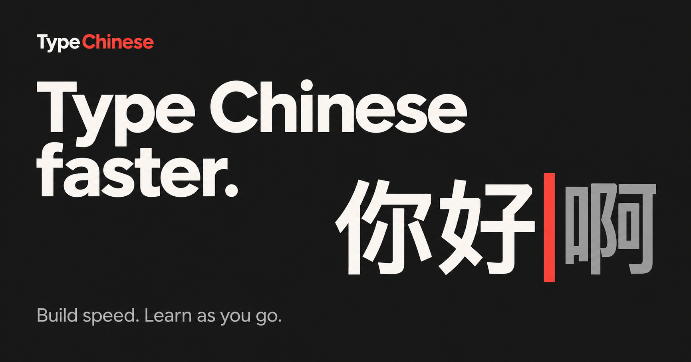
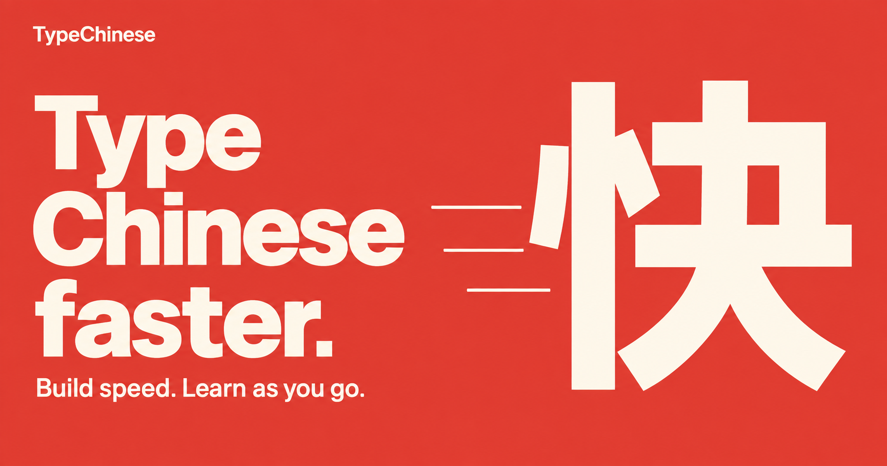

Typing speed first. No app screenshots. Click an image to view it full size.

A tangible typing motif, with ivory keys and a red return key.

Simple, direct, and centered on the act of typing.

A bold red poster that makes speed the visual focus.